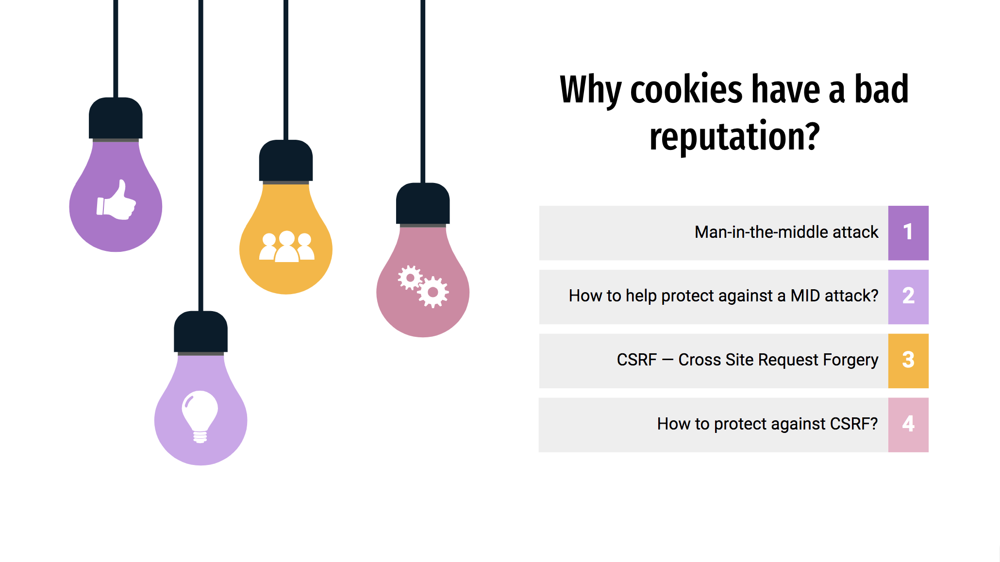

Vulnerabilities associated with cookiess
Last Updated: November 13, 2020
In last week's blog post, I debunked some myths about the HTTP cookies and proved them false. If most people who utilize cookies have good intentions, then why do they often have a bad reputation?
In this week's blog, I am going to talk about certain examples of vulnerabilities associated with cookies.
Man-in-the-middle
According to Harshal Patil in his "Ultimate Guide to HTTP Cookies" blog, people mistakenly attribute data stealing to cookies because of the man-in-the-middle attack. In fact, this attack has little to do with cookies but more so with HTTP and HTTPS. The middle entities simply read the cookies, so if a data stored in cookies travels via HTTP and are read by the hacker, then the hacker can fake as another user.
How to protect yourself from a MID attack?
In order to protect yourself from this type of attack, you can do the following:
- Make sure “HTTPS” — with the S — is always in the URL bar of the websites you visit. With HTTPS, man-in-the-middle attack is less likely to happen.
- Be on the lookout for any suspicious or phising emails from attackers asking you to update your login credentials such as updating your password.
- According to Norton Security, you should also make sure your home Wi-Fi network is secure.
- Do not connect to public Wi-Fi routers directly, if possible.
CSRF - Cross Site Request Forgery
Another attack that utilizes cookies is called Cross Site Request Forgery. This is an attack where the attacker tricks the user's computer into running code that is perceived as trustworthy due to the fact that it appears to belong to the server; this allows the attacker to obtain a copy of the cookie or perform other operations. According to Harshal Patil, in this scenario the attacker simply exploits the fact that cookies are sent to server for each and every request.
To understand this better, Harshap Patil gives an example scenario and asks us to imagine that a user is visiting two websites: one is a legitimate bank website and the other one is some fake website created by the attacker. Assuming the user has already logged into bank website and is trying to navigate to the attacker's website, it will try to load image at given address. As a result, the browser could send the cookie for that domain, even if the request is issued from some other website (cross-site). Harshap Patil says: "In short, evil website made a cross-site request to other domain with an intention to cause harm. Such attack is known as cross-site request forgery (CSRF). CSRF attacks happen very silently and involves visiting multiple website at once; thus it is very difficult to track down CSRF attach."
How to protect against CSRF?
According to Harshal Patil, a simple solution to CSRF attack is to use Referer Header. Referrer header tells server from where the request has originate. In his example, mybank.com server can check Referer header. If the request is coming from evilwebsite.com, then Referer header will contain that value and server can simply reject that request.
In conclusion, although cookies are often a topic of a debate and may carry a bad reputation, you can be assured cookies are designed with good intentions. With good measures cookies can help build strong session management experience for your web applications without compromising on security. If you are still feel uneasy about them then take the right measures and precaution any attacks on the web in general.